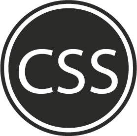

Skills




Junior Web Developer
A flexible Junior Web Developer seeking to max his full potential in the coding world. A natural leader who is confident yet willing to learn. I thrive on new challenges and am a problem solver.
Performed the following tasks: packing and sorting wood/bulk, glueing, sanding and packing. I also assisted in delivery of product.
I completed a variety of leadership courses throughout my high school career:
- 24 month program with NGO, Leaders Quest, covering the following modules: Self-awareness, Self-management, Social-awareness, Social management, Leadership, Innovation and Entrepreneurship.
- 12 month Mini Entreprise Program, offering both theory and experimental learning in the following areas: Business Management, Market and Product research, Financial Management and Control, Pricing and Costing , Sales and Marketing, Problem Solving and Decision Making.
- 12 month program, Dream to be peer education: focusing on well-being and how to deal with peer pressure, develop empathy and improve self-esteem.
- Participated in a YES enterprise program, which focuses on both the theory and practice of Entrepreneurship. I played the role of a Constitutional Advisor throughout the duration of the program.
The Lifechoices Academy is a full-time program which empowers youth from the Cape Flats with life, practical and professional development skills. We did intensive study of the following web development languages: HTML, CSS, jQuery, JavaScript and Sass. As part of our professional development, we had the opportunity to use online resources such as MOOCs, were taught Design Thinking and made use of resources for personal reflection, such as DISC profiles and SMART goal setting. Taking part in this program has taught me how to better manage my time, deal with conflict and work as part of a team. My self awareness and confidence have grown and I am more in tune to the ways I learn and deal with others.
Prefect and on the Representative Councillor
Soccer captain
Top 10 from grade 9 to Matric

nathan@codespace.co.za
021 685 0991

candice@lifechoices.co.za
021 696 4157

stefan@codespace.co.za
021 685 0991
| South Africa,Western Cape |
| github |